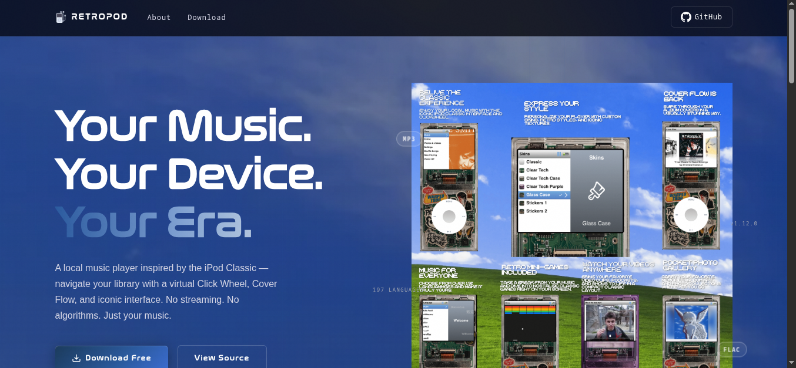

Configuración personalizada de Neovim con ~50 plugins: LSP, autocompletado, árbol de archivos, formateo y más. Listo para usar con un solo comando.
ver en github
Una app reproductora de música local diseñada para capturar la esencia nostálgica del icónico iPod Classic.
ver en github
La web oficial de RetroPod. Landing page nostálgica para la app reproductora de música inspirada en el iPod Classic, con temática retrowave y navegación por landmarks sonoros.
ver en github
Un Postman de bolsillo para la terminal, construido para Termux pero funciona donde Go corra. Cliente HTTP TUI de un solo binario: colecciones, entornos, helpers de auth, historial de requests y sustitución de {{variables}}, todo desde el teclado.
ver en github
Un experimento para tocar y aprender Strudel con Claude Code. Un entorno de live coding a pantalla completa para hacer música, construido para IA: expone APIs REST para que Claude pueda componer y controlar la música programáticamente.
ver en githubGestor de ambiente educativo y de bienestar del SENA Colombo Alemán. Sistema con 3 roles (Administrativo, Instructor, Aprendiz), dashboards personalizados, salud estudiantil con gráficas, chatbot IA con Ollama, noticias y perfil editable. Responsive Web + Mobile.
ver en github/**
* @file README.md
* @project NvimOnMy_way
* @description Configuración personalizada de Neovim con ~50 plugins.
*/
const config = {
name: "NvimOnMy_way",
type: "Neovim Config",
language: "Lua",
requirements: [
"Python & pip",
"Neovim >= 0.12.0",
"nerdfonts",
"NodeJS & tree-sitter-cli"
],
installation: "git clone https://github.com/RchrdAriza/NvimOnMy_way ~/.config/nvim",
keymaps: {
leader: "Space"
},
plugins: [
"lazy.nvim (Package Manager)",
"neo-tree (File Explorer)",
"nvim-lspconfig & mason (LSP)",
"nvim-cmp (Completion)",
"Tokyo-night (Colorscheme)"
]
};
/**
* @file README.md
* @project curlmoon
* @description A pocket-sized Postman for the terminal — built for Termux, but it runs anywhere Go does.
*/
const curlmoon = {
name: "curlmoon",
type: "TUI HTTP Client",
language: "Go",
binary: "single-binary",
features: [
"Collections",
"Environments",
"Auth helpers",
"Request history",
"{{variable}} substitution"
],
input: "keyboard-driven, no mouse required",
runs: "Termux & anywhere Go does"
};
/**
* @file README.md
* @project strudel-copilot
* @description An experiment to play and learn Strudel with Claude Code.
*/
const strudel = {
name: "strudel-copilot",
type: "Live Coding Environment",
aim: "AI-driven music composition",
size: "minimal, full-screen",
stack: [
"Strudel",
"REST API",
"JavaScript"
],
features: [
"Compose music programmatically via API",
"Claude Code controls the music"
]
};
/**
* @file README.md
* @project RetroPod
* @description A local music player app designed to capture the nostalgic essence of the iconic iPod Classic.
*/
const retropod = {
name: "RetroPod",
type: "Local Music Player",
stack: [
"Dart",
"Flutter"
],
inspiration: [
"iPod Classic",
"Nostalgia"
],
audio: "local only, no cloud"
};
/**
* @file README.md
* @project retroPodweb
* @description The official RetroPod website — a nostalgic landing page for the iPod Classic-inspired music app.
*/
const retroPodweb = {
name: "retroPodweb",
type: "Landing Page",
stack: [
"HTML",
"CSS",
"JavaScript"
],
theme: "Retrowave Y2K",
features: [
"Landmarks sonoros",
"Promo de la app RetroPod",
"Estética nostalgic"
]
};
/**
* @file README.md
* @project AsiSena
* @description Gestor de ambiente educativo y de bienestar del SENA Colombo Alemán.
*/
const asisena = {
name: "AsiSena",
type: "Educational Manager",
stack: [
"Dart",
"Flutter",
"fl_chart",
"Ollama (gemma3:4b)"
],
roles: [
"Administrativo",
"Instructor",
"Aprendiz"
],
features: [
"Auth con 3 roles",
"Dashboards personalizados por rol",
"Salud estudiantil con gráficas",
"Chatbot IA con Ollama",
"Noticias institucionales",
"Perfil editable"
],
responsive: "Web + Mobile"
};